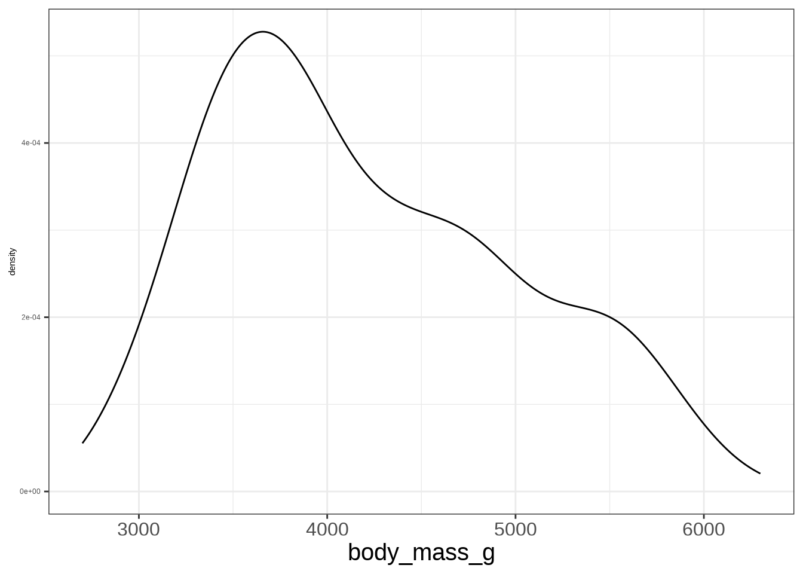

Code
Melanoma |>
ggplot(aes(thickness, dead)) +
geom_point()
Melanoma is a type of skin cancer that causes the cells that produce melanin to grow out of control. What makes Melanoma so dangerous is that it can metastasize to other parts of the body.
We are interested in learning how do different factors affect and individual’s chances of survival. Therefore, we are measuring patients and if they lived or died during a study period.
We will be using the Melanoma data set with the following variables: dead (died by Melanoma, 1=yes, 0= no), sex (1 = male, 0 = female), age (in years), thickness (tumour thickness in mm), ulcer (1 = presence, 0 absent).
\[ \left(\begin{array}{c} Dead \\ Alive \end{array}\right) = \beta_0 + \beta_1X \]
\[ Y = \left\{\begin{array}{cc} 1 & Dead \\ 0 & Alive \end{array}\right. \]
\[ P\left(Y = 1\right) = \beta_0 + \beta_1X \]
\[ P\left(Y = 1\right) = \frac{e^{\beta_0 + \beta_1X}}{1 + e^{\beta_0 + \beta_1X}} \]
\[ \frac{P(Y = 1)}{P(Y = 0)} = e^{\beta_0 + \beta_1X} \]
where \(\frac{P(Y = 1)}{P(Y = 0)}\) are considered the odds of observing \(Y = 1\).
\[ \log\left\{\frac{P(Y = 1)}{P(Y = 0)}\right\} = \beta_0 + \beta_1X \]
Logistic Regression is used to model the association between a set of predictors and a binary outcome variable.
This is similar Linear Regression which models the association between a set of predictors and a numerical outcome variable.
Logistic Regression uses the logistic model to formulate the relationship between the predictors and the outcome.
More specifically, for an outcome of Y:
\[ Y = \left\{\begin{array}{cc} 1 & \text{Category 1} \\ 0 & \text{Category 2} \end{array}\right. \]
The Predictors variable will model the probability of observing category 1 (\(P(Y=1)\))
\[ \log\left\{\frac{P(Y = 1)}{P(Y = 0)}\right\} = \beta_0 + \beta_1X \]
The regression coefficients quantify how a specific predictor changes the odds of observing the first category of the outcome (\(Y = 1\))
To obtain the numerical value for \(\beta\), denoted as \(\hat \beta\), we will be finding the values of \(\hat \beta\) that maximizes the likelihood function:
\[ L(\boldsymbol \beta) = \prod_{i=1}^n \left(\frac{e^{\beta_0 + \beta_1X}}{1 + e^{\beta_0 + \beta_1X}}\right)^{Y_i}\left(\frac{1}{1 + e^{\beta_0 + \beta_1X}}\right)^{1-Y_i} \]
The likelihood function can be thought as the probability of observing the entire data set. Therefore, we want to choose the values the \(\beta_0\) and \(\beta_1\) that will result in the highest probability of observing the data.
The values you obtain (\(\hat \beta\)) tell you the relationship between the a predictor variable and the log odds of observing the first category of the outcome \(Y=1\).
Exponentiating the estimate (\(e^{\hat \beta}\)) will give you the relationship between a predictor variable and the odds of observing the first category of the outcome \(Y=1\).
For a continuous predictor variable:
As X increases by 1 unit, the odds of observing the first category (\(Y = 1\)) increases by a factor of \(e^{\hat\beta}\).
For a categorical predictor variable (first dummy variable):
The odds of observing the first category (\(Y = 1\)) in the indicated category (\(D=1\)) is \(e^{\hat\beta}\) times higher/lower compared to the reference category (\(D=0\)).
Modelling dead by sex, age, thickness, and ulcer:
#>
#> Call: glm(formula = dead ~ sex + age + thickness + ulcer, family = binomial(),
#> data = Melanoma)
#>
#> Coefficients:
#> (Intercept) sex age thickness ulcer
#> -2.39860 0.40767 0.00402 0.11253 1.31314
#>
#> Degrees of Freedom: 204 Total (i.e. Null); 200 Residual
#> Null Deviance: 242.4
#> Residual Deviance: 210.3 AIC: 220.3\[ \log(odds) = -2.40 + 0.41 M + 0.004 age + 0.11 thick + 1.31ulc \]
\[ \log(odds) = -2.40 + 0.41 M + 0.004 age + 0.11 thick + 1.31ulc \]
The odds of experiencing death in males is 1.5 times larger than the odds for females, adjusting for age, tumor thickness and the presence of an ulcer.
As age increases by 1 year, the odds of experiencing death increases by a factor of 1.004, adjusting for sex, tumor thickness and presence of an ulcer.
As you can see, working with odds may be unintuitive for the average person. It will be better to predict the probability and display those results to individuals.
\[ \hat P\left(Y = 1\right) = \frac{e^{\hat\beta_0 + \hat\beta_1X_1 + \cdots + \hat \beta_pX_p}}{1 + e^{\hat\beta_0 + \hat\beta_1X_1 + \cdots + \hat \beta_pX_p}} \]
Predict the probability of observing death for a patient who is male, 75 years old, an tumor thickness of 2.9, and with ulcer presence.
Predict the probability of observing death for a patient who is male, 75 years old, an tumor thickness of 2.9, and without ulcer presence.
| Ulcer Present | Ulcer not Present | |
|---|---|---|
| Probabiltiy | 48.7% | 20.3% |
For a patient who is 75 years old, male, and a tumor thickness of 2.9, when an ulcer is present, the probability a patient dies increases to 48% compared to a patient who does not have an ulcer with a probability of 20%.
Predict the probability of observing death for a patient who is female, 75 years old, an tumor thickness of 2.9, and with ulcer presence.
Predict the probability of observing death for a patient who is female, 55 years old, an tumor thickness of 2.9, and with ulcer presence.
| 55 | 75 | |
|---|---|---|
| Probabiltiy | 36.8% | 38.7% |
For a patient who is female, a tumor thickness of 2.9, and has an ulcer, the probability a 75 year old patient dies increases to 38.7% compared to a 55 year old patient with a probability of 36.8%.